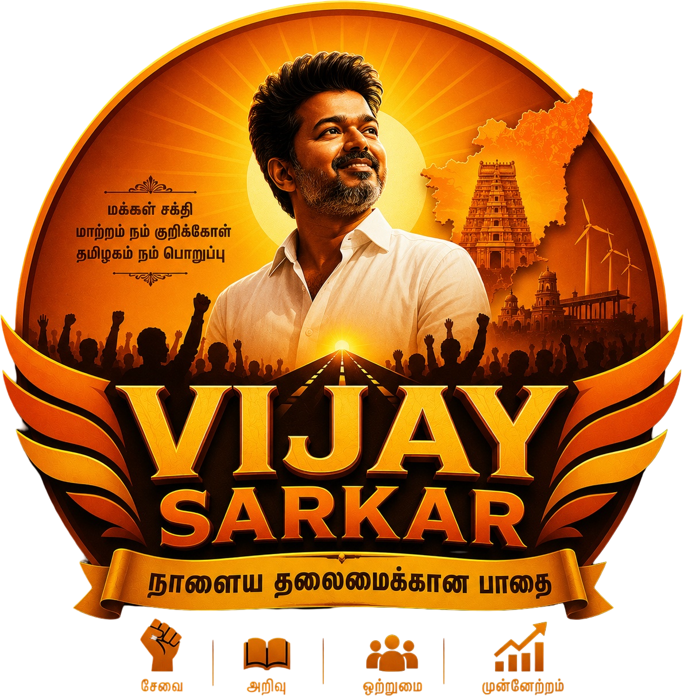

<style>
  :root{
    --red:#c41e24;
    --red-deep:#8f1116;
    --gold:#f0b429;
    --gold-deep:#c98f0f;
    --ink:#241a0d;
    --cream:#fff8ea;
    --grey:#7a6f5c;
    --line:rgba(36,26,13,0.14);
  }
  *{margin:0;padding:0;box-sizing:border-box;}
  body{font-family:'Hind Madurai', sans-serif;color:var(--ink);}
  a{color:inherit;text-decoration:none;}
  img{max-width:100%;}
  [lang-en]{display:none;}
  body.lang-en [lang-ta]{display:none;}
  body.lang-en [lang-en]{display:inline;}

  .brand{display:flex;align-items:center;gap:10px;min-width:0;}
  .brand-mark{width:40px;height:40px;flex-shrink:0;object-fit:contain;}
  .brand-text{line-height:1.1;min-width:0;}
  .brand-text .ta{font-family:'Catamaran',sans-serif;font-weight:800;font-size:17px;white-space:nowrap;}

  /* FOOTER */
  footer{
  position: relative;
  background:
    linear-gradient(rgba(143,17,22,0.88), rgba(143,17,22,0.92)),
    url("https://images.moneycontrol.com/static-mcnews/2025/08/20250821125046_Vijay-TVK-Madurai-Rally-Twitter.jpg?impolicy=website&width=1280&height=720") center center / cover no-repeat;
  color: rgba(255,255,255,0.75);
  padding: 56px 24px 28px;
  overflow: hidden;
}
  .foot-grid{
    max-width:1180px;margin:0 auto;
    display:grid;grid-template-columns:1.4fr 1fr 1fr 1fr;gap:40px;
    padding-bottom:36px;border-bottom:1px solid rgba(255,255,255,0.15);
  }
  .foot-brand .brand-text .ta{color:#fff;}
  .foot-brand p{margin-top:14px;font-size:14px;line-height:1.7;max-width:280px;color:rgba(255,255,255,0.6);}
  footer h4{font-size:13px;letter-spacing:0.1em;text-transform:uppercase;color:var(--gold);margin-bottom:16px;}
  footer ul{list-style:none;}
  footer li{margin-bottom:10px;font-size:14.5px;word-break:break-word;}
  footer a:hover{color:var(--gold);}
  .foot-bottom{
    max-width:1180px;margin:0 auto;padding-top:24px;
    display:flex;justify-content:space-between;flex-wrap:wrap;gap:12px;
    font-size:13px;color:rgba(255,255,255,0.5);
  }

  /* Responsive */
  @media (max-width:860px){
    .foot-grid{grid-template-columns:1fr 1fr;gap:32px;}
  }
  @media (max-width:520px){
    .foot-grid{grid-template-columns:1fr;gap:28px;}
    .foot-bottom{flex-direction:column;text-align:left;}
  }
</style>

<footer>
  <div class="foot-grid">
    <div class="foot-brand">
      <div class="brand">
        
        <div class="brand-text"><div class="ta"><span lang-ta>TVK சர்க்கார்</span><span lang-en>TVK Sarkar</span></div></div>
      </div>
      <p><span lang-ta>தமிழக வெற்றிக் கழகத்தின் திருச்சிராப்பள்ளி மாவட்ட தன்னார்வலர்களால் பராமரிக்கப்படும் இணையதளம்.</span><span lang-en>A website maintained by TVK Tiruchirappalli district volunteers.</span></p>
    </div>
    <div>
      <h4><span lang-ta>வழிசெலுத்தல்</span><span lang-en>Navigate</span></h4>
      <ul>
        <li><a href="#about"><span lang-ta>எங்களைப் பற்றி</span><span lang-en>About</span></a></li>
        <li><a href="#constituencies"><span lang-ta>தொகுதிகள்</span><span lang-en>Constituencies</span></a></li>
        <li><a href="#activities"><span lang-ta>நடவடிக்கைகள்</span><span lang-en>Activities</span></a></li>
      </ul>
    </div>
    <div>
      <h4><span lang-ta>தொடர்பு</span><span lang-en>Contact</span></h4>
      <ul>
        <li><span lang-ta>திருச்சிராப்பள்ளி, தமிழ்நாடு</span><span lang-en>Tiruchirappalli, Tamil Nadu</span></li>
        <li>info@tvktrichy.example</li>
      </ul>
    </div>
    <div>
      <h4><span lang-ta>இணையுங்கள்</span><span lang-en>Join</span></h4>
      <ul>
        <li><a href="#volunteer"><span lang-ta>தன்னார்வலராக இணையுங்கள்</span><span lang-en>Join as Volunteer</span></a></li>
        <li><a href="#"><span lang-ta>சமூக ஊடகம்</span><span lang-en>Social Media</span></a></li>
      </ul>
    </div>
  </div>
  <div class="foot-bottom">
    <span><span lang-ta>© 2026 TVK திருச்சிராப்பள்ளி மாவட்டம். அனைத்து உரிமைகளும் பாதுகாக்கப்பட்டவை.</span><span lang-en>© 2026 TVK Tiruchirappalli District. All Rights Reserved.</span></span>
    <span><span lang-ta>இது தமிழக வெற்றிக் கழகத்தின் அதிகாரப்பூர்வ இணையதளம் அல்ல — தன்னார்வலர் இணையதளம்.</span><span lang-en>This is not the official TVK website — a volunteer-maintained site.</span></span>
  </div>
</footer>
